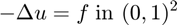
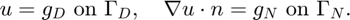
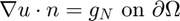
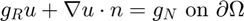
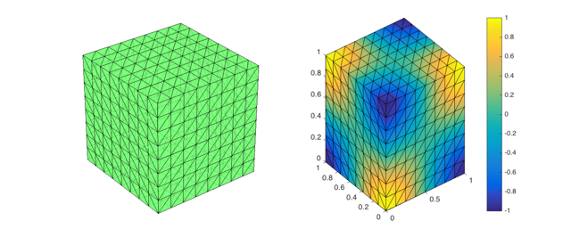
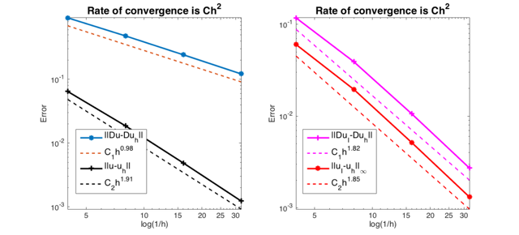
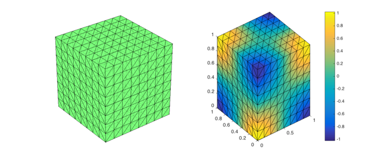
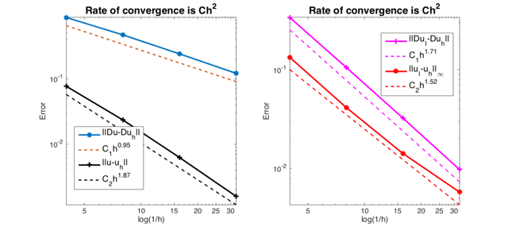
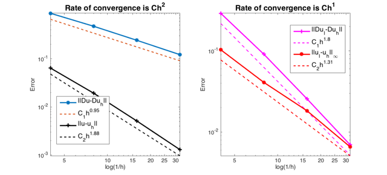

RATE OF CONVERGENCE OF LINEAR ELEMENT FOR POISSON EQUATION
This example is to show the rate of convergence of linear finite element approximation of the Poisson equation on the unit square:

for the following boundary condition:
- Non-empty Dirichlet boundary condition. 
- Pure Neumann boundary condition. .
- Robin boundary condition. 
Contents
Setting
[node,elem] = cubemesh([0,1,0,1,0,1],0.5);
pde = sincosdata3;
option.L0 = 1;
option.maxIt = 4;
option.elemType = 'P1';
option.printlevel = 1;
option.plotflag = 1;
Non-empty Dirichlet boundary condition.
bdFlag = setboundary3(node,elem,'Dirichlet','~(x==0)','Neumann','x==0'); % bdFlag = setboundary3(node,elem,'Dirichlet'); femPoisson3(node,elem,pde,bdFlag,option);
Multigrid V-cycle Preconditioner with Conjugate Gradient Method
#dof: 4913, #nnz: 23790, smoothing: (1,1), iter: 11, err = 3.72e-09, time = 0.017 s
Multigrid V-cycle Preconditioner with Conjugate Gradient Method
#dof: 35937, #nnz: 209374, smoothing: (1,1), iter: 11, err = 5.13e-09, time = 0.11 s
Table: Error
#Dof ||u-u_h|| ||Du-Du_h|| ||DuI-Du_h|| ||uI-u_h||_{max}
125 6.46061e-02 9.23927e-01 1.17911e-01 6.04325e-02
729 1.86268e-02 4.80477e-01 3.91991e-02 1.95770e-02
4913 4.86895e-03 2.42898e-01 1.06348e-02 5.17072e-03
35937 1.23196e-03 1.21798e-01 2.72075e-03 1.31609e-03
Table: CPU time
#Dof Assemble Solve Error Mesh
125 3.02e-03 1.36e-04 1.68e-03 1.82e-03
729 1.44e-02 1.03e-03 6.74e-03 1.25e-02
4913 1.52e-01 1.69e-02 3.83e-02 6.24e-02
35937 1.07e+00 1.05e-01 4.91e-01 6.07e-01
  Pure Neumann boundary condition.
bdFlag = setboundary3(node,elem,'Neumann');
femPoisson3(node,elem,pde,bdFlag,option);
Multigrid V-cycle Preconditioner with Conjugate Gradient Method
#dof: 4913, #nnz: 32650, smoothing: (1,1), iter: 13, err = 2.43e-09, time = 0.023 s
Multigrid V-cycle Preconditioner with Conjugate Gradient Method
#dof: 35937, #nnz: 245018, smoothing: (1,1), iter: 14, err = 4.76e-09, time = 0.14 s
Table: Error
#Dof ||u-u_h|| ||Du-Du_h|| ||DuI-Du_h|| ||uI-u_h||_{max}
125 7.70680e-02 8.69504e-01 3.38890e-01 1.33687e-01
729 2.35461e-02 4.70688e-01 1.05354e-01 4.13393e-02
4913 6.27721e-03 2.41377e-01 3.23192e-02 1.41357e-02
35937 1.59840e-03 1.21576e-01 9.72436e-03 5.74640e-03
Table: CPU time
#Dof Assemble Solve Error Mesh
125 3.85e-03 3.02e-04 1.51e-03 2.45e-03
729 1.59e-02 2.63e-03 8.20e-03 1.13e-02
4913 1.19e-01 2.34e-02 3.67e-02 5.64e-02
35937 1.09e+00 1.43e-01 5.25e-01 5.96e-01
  Pure Robin boundary condition.
pdeRobin = sincosRobindata3;
bdFlag = setboundary3(node,elem,'Robin');
femPoisson3(node,elem,pdeRobin,bdFlag,option);
Multigrid V-cycle Preconditioner with Conjugate Gradient Method
#dof: 4913, #nnz: 35729, smoothing: (1,1), iter: 11, err = 2.75e-09, time = 0.024 s
Multigrid V-cycle Preconditioner with Conjugate Gradient Method
#dof: 35937, #nnz: 257313, smoothing: (1,1), iter: 11, err = 8.49e-09, time = 0.13 s
Table: Error
#Dof ||u-u_h|| ||Du-Du_h|| ||DuI-Du_h|| ||uI-u_h||_{max}
125 6.40633e-02 8.75746e-01 2.90399e-01 1.03297e-01
729 1.93507e-02 4.71714e-01 9.10331e-02 4.09455e-02
4913 5.14258e-03 2.41519e-01 2.57055e-02 1.83236e-02
35937 1.30834e-03 1.21594e-01 6.98457e-03 6.58871e-03
Table: CPU time
#Dof Assemble Solve Error Mesh
125 5.38e-03 2.74e-04 1.35e-03 4.41e-03
729 3.01e-02 3.61e-03 2.03e-02 7.46e-03
4913 1.32e-01 2.45e-02 4.42e-02 6.84e-02
35937 1.08e+00 1.32e-01 5.11e-01 6.07e-01
 Conclusion
The optimal rate of convergence of the H1-norm (1st order) and L2-norm (2nd order) is observed. The 2nd order convergent rate between two discrete functions |DuI-Duh| is known as superconvergence.
MGCG converges uniformly in all cases.